内容要点
懂太多的高糕手译制的一堂完整 Lightroom 风光后期课：把「平淡 RAW」重置后从头做起——先裁剪定构图，再基础校正与小 S 曲线；校准定底层色，HSL（尤其明度）做鲜活，色彩分级分冷暖；用少量蒙版塑光（径向引向海湾、线性压前景、圆形侧光模拟与蒙版堆叠），清理杂物，导出前过降噪／镜头校正／暗角，并强调离开电脑再回看。秘诀不是「动几个滑块」，而是可复用的工作流与眼睛判断。
知识结构
重置成品；4:3＋自动拉直；O 键参考线；预设可作起点但本期从头。
自动／手调曝光；小 S 曲线；暗部轻抬；略降清晰度。
早清杂物（AI 污点）；蓝／红原色校准后再进 HSL。
降蓝饱和＋降蓝明度加深；黄提亮、绿压暗。
本片阴影偏冷补蓝；色调略冷、高光略暖。
五蒙版对比；径向引海湾；盯直方图防白色过曝。
圆形侧光模拟；锥形第二光源堆叠；画笔收边。
再提对比／改裁剪；移除建筑船只柱子＝清理照片。
ISO100 可不降噪；暗角颗粒；离开电脑再看。
大片感来自「构图→全局色调→局部塑光→清理→离开再看」的闭环；蒙版是为掌控光线与纵深，不是堆滑块。
00:00-01:30先裁剪定构图，再谈精修
开场反驳「秘诀只是动几个滑块」：作者做后期约一年，本期毫无保留演示完整工作流。画面先出示已修好的竖幅山谷海湾风光，再重置，从零开始。
第一件事永远是裁剪：定构图后才知道蒙版该落在哪。选 4:3，点自动校正拉直；不知参考线时按 O 键切换辅助线。通常会再套自用预设（如夏日色彩流行）加速，但教程选择从头演示；预设包链接在描述里。00:26／00:47 可核。
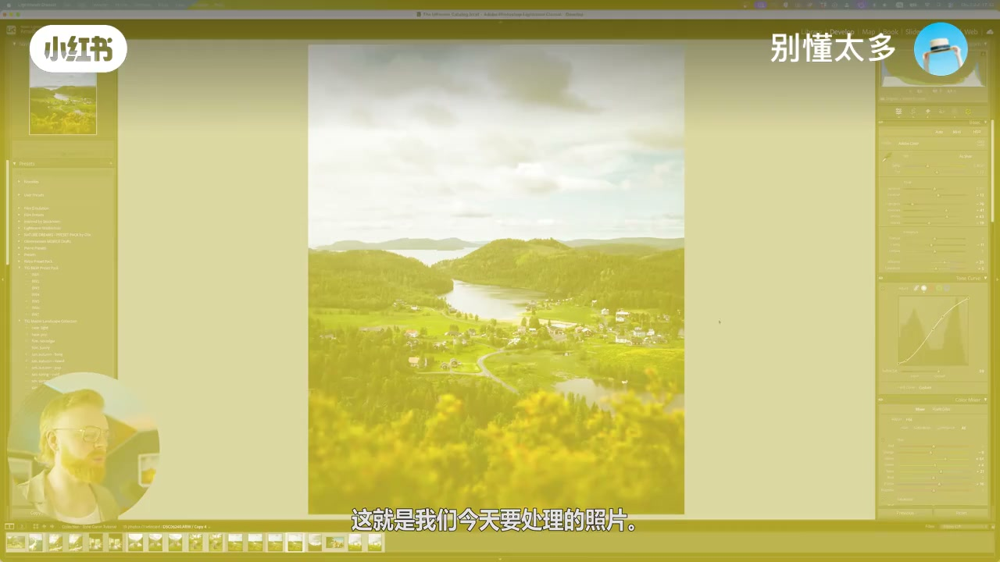
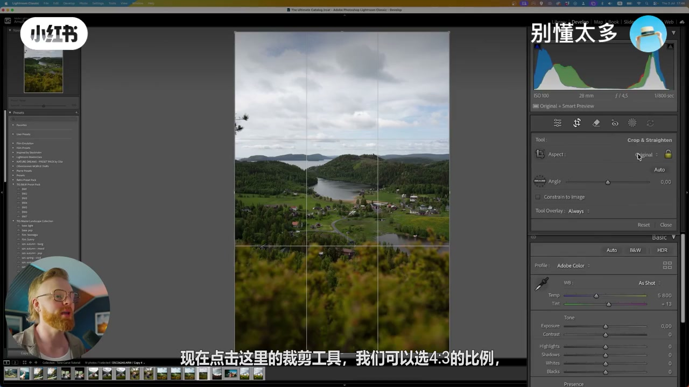
01:30-03:02基础校正与简单小 S 曲线
从基础面板起步：可先乱拖几个滑块看感觉，或点自动校正曝光，同时看直方图——怎么开始并不重要，关键是修图时的状态与感觉。
再做简单小 S 曲线提对比；暗部可轻微抬升，让黑色不那么「死」。略降清晰度后，裁剪＋基础＋曲线告一段落。作者强调后期大半时间在来回微调，用眼睛判断好看，艺术主观。02:15 曲线帧对应。
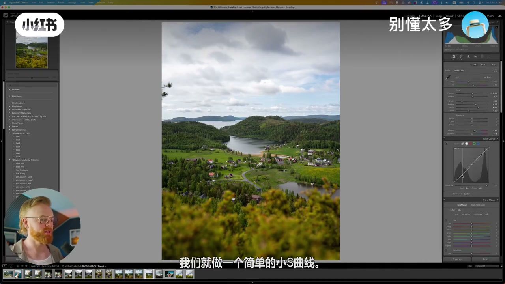
03:02-05:20先校准再 HSL：忍不住早清杂物
接下来两条路：先 HSL 调色相／饱和度／明度，或先蒙版塑光分离主体——取决于照片与感觉。本期选先色彩后蒙版。通常去污放最后，但画面杂物太刺眼，先用污点去除＋生成式 AI 涂抹清掉。
调色从校准开始：蓝原色色相约减 30、饱和度加 20，红原色色相加 7（夸张效果会回退）；绿饱和度试到约 25。校准改变 Lightroom 解读底层基调的方式，作者建议在 HSL 前做。黄／橙／蓝色相再小幅来回。04:08 字幕参数可核。
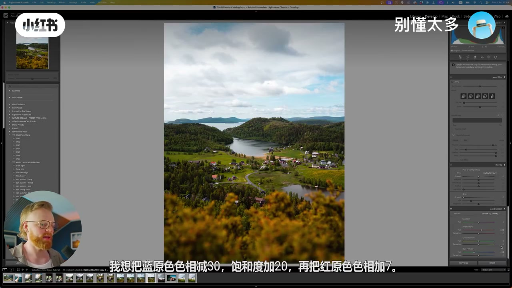
05:20-07:00HSL 明度：加深蓝色、压绿提黄
开关对比展示 HSL 前后差异。重点讲明度：很多人羡慕「颜色突出鲜活」，除时机光线蒙版外，明度贡献大量冲击力。
个人习惯少蓝：先降蓝饱和得舒服色，再降蓝明度——不是减蓝，是加深。黄提亮更明亮；绿不提亮反而压暗，避免全图亮闪闪；绿黄相近可同向压，绿更浓郁。整体再微调，橙色忌过火。05:12／05:55 为证据。
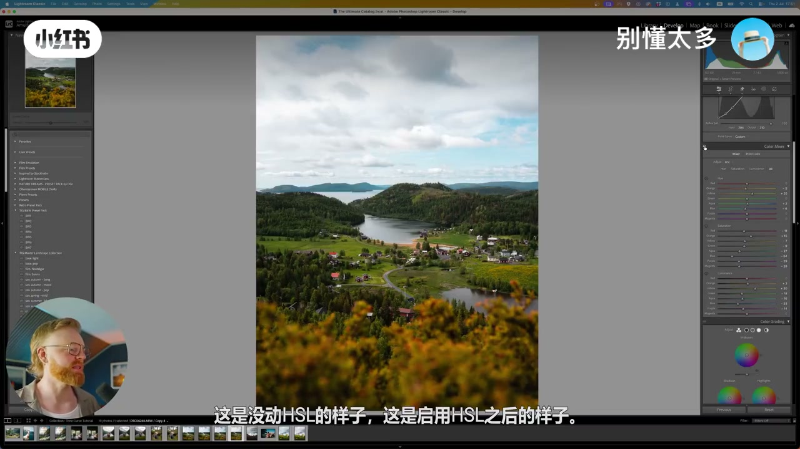
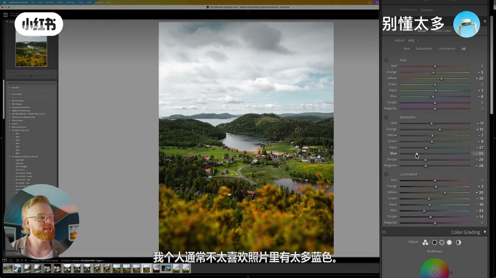
07:00-08:45色彩分级：阴影偏冷、高光偏暖
进色彩分级（阴影／中间调／高光）。怀旧复古常让阴影偏暖；本片因饱和度已减很多蓝，选择阴影偏冷、补回一点点蓝。色调约减到 -5，高光加暖约到 +41。
作者强调：色彩理论越透，越能在各分区「只是在加颜色」，进而形成个人风格。中段穿插点赞玩笑，并预告真正关键步是蒙版。07:42 冷阴影色轮可指认。
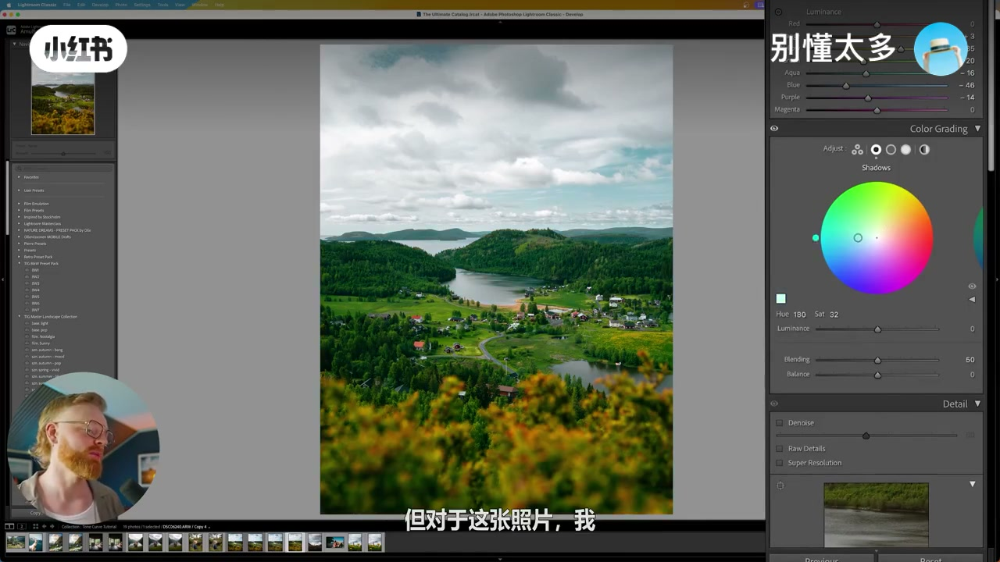
08:45-12:06五蒙版塑层次：径向引向小海湾
全局色不错仍缺层次：开关约五个蒙版，前后差巨大。蒙版目的是塑光、掌控光线、增加纵深——像古典绘画大师塑造画面，而非莎士比亚口误。
本片没有其他作品那种强主体，是山谷整体景；目标把视线引到小海湾。用径向渐变（ASR「镜像」）放中部：提阴影、加白色，盯直方图三角防局部过曝，再调羽化与对比度。线性渐变压暗前景对立体感帮助巨大，常联用曝光与对比度。09:20／11:22 对应。
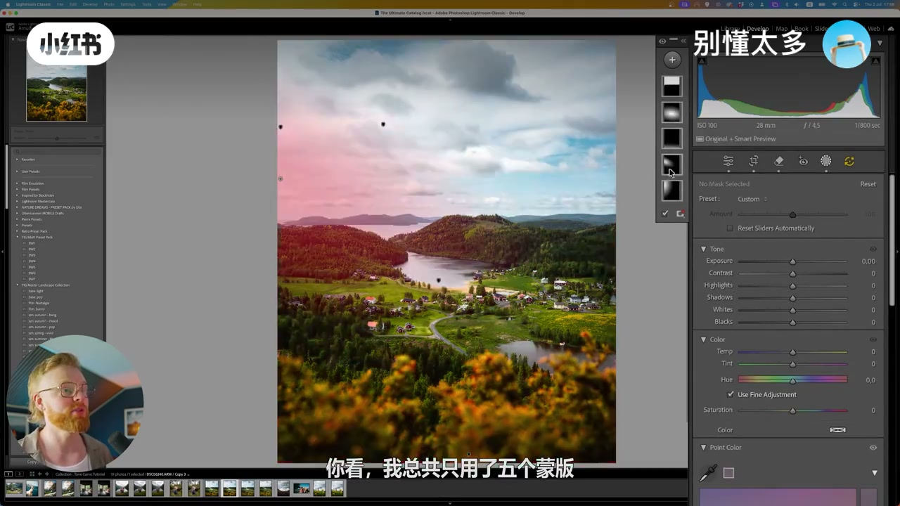
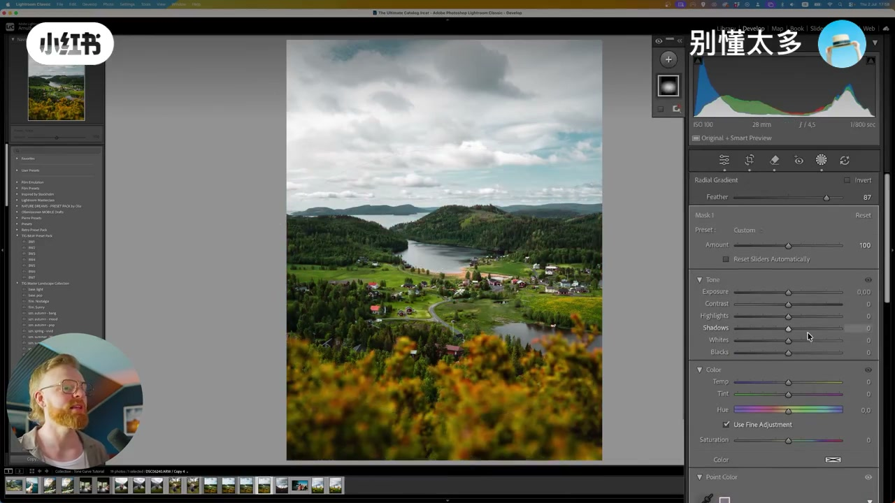
12:06-15:43侧光模拟、蒙版堆叠与画笔收边
据建筑阴影判断阳光方向后做「侧光模拟」：圆形选区放在光源同侧角落，降清晰度＋降去朦胧；可选色温暖化模拟阳光，本片只需极轻。再做一个锥形第二光源叠在山谷／海湾，称蒙版堆叠——功能相近的蒙版叠加换更强控制。
录制中电池告急、窗外太阳变强导致邻居房过曝，临时加补光后「接着干」。画笔缩小预览看全边，O 键显示涂抹范围，轻微压暗边角与底部。12:15／13:20 为塑光帧。
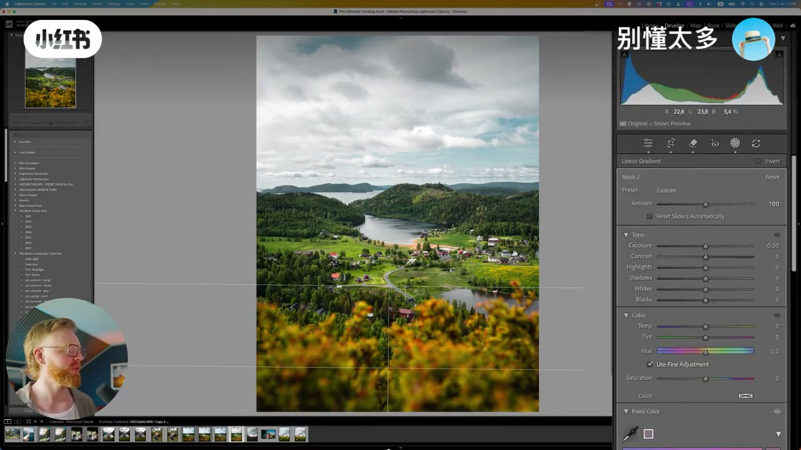
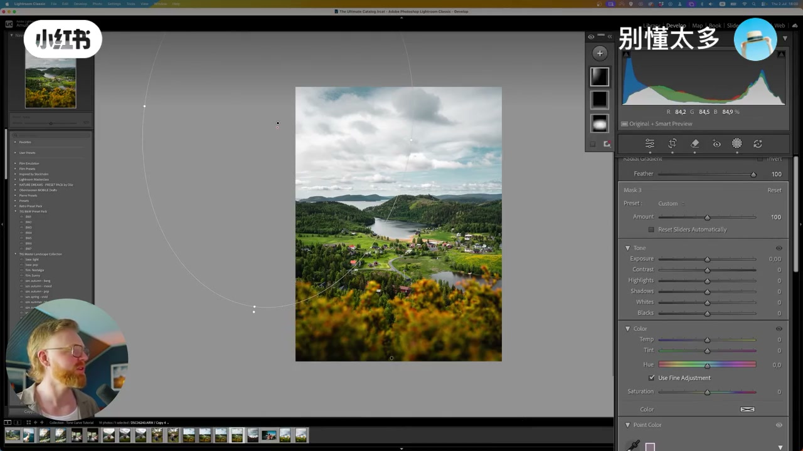
15:43-18:00再提对比，清理建筑与杂物
对照最终稿：颜色更好但仍缺对比——回曲线再拉。并发现裁剪可从 4:5 调到 3:4；觉得建筑不好看就用移除工具清掉，小船、柱子、电线杆同理。问自己「好看吗、有必要吗、对画面有贡献吗」，没有就移除，称「清理照片」。生成式 AI 可选，早年纯手动点除也能做。
导出前若认同这种思维方式，中段导流 Lightroom 大学课（含色彩理论模块）——属广告，正文只记「理解为什么调」的取向。16:30 移除工具帧。
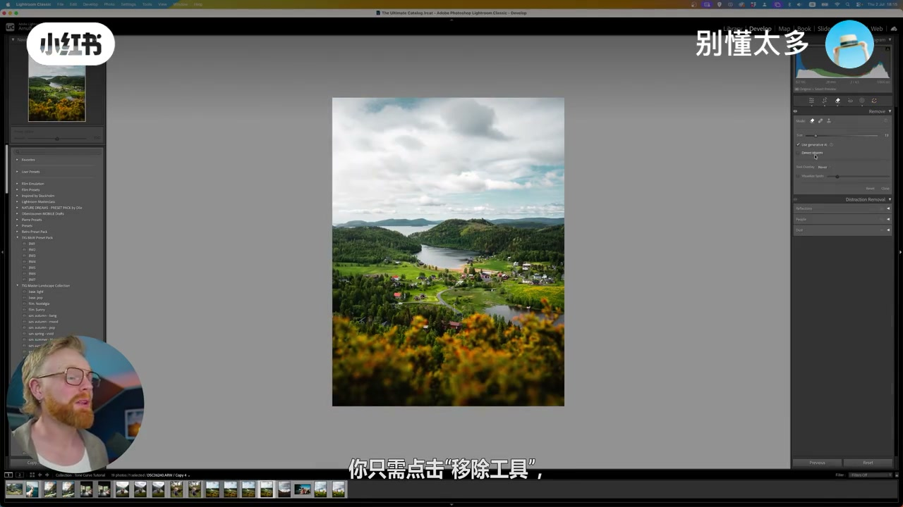
18:00-20:40导出前检查，最重要是离开电脑
最后几步顺序可自定：先问「要不要降噪」——本片 ISO100，按语境应是不需要（ASR 疑漏「不」）；镜头校正常习惯前置，但有时喜欢镜头畸变可不启。再扫颜色、加一点暗角与羽化、颗粒，整体再过对比度、降过绿过蓝、局部再降一点曝光。
编辑时最重要是离开电脑：沉浸易做出糟糕调整而不自知。站起五分钟喝水，或次日再看，才能发现蓝偏、Aqua 等问题。理解每个调整的效果只解决一半，另一半是如何运用；片尾预告立体感／深度续集。19:40 回看差异帧收束。
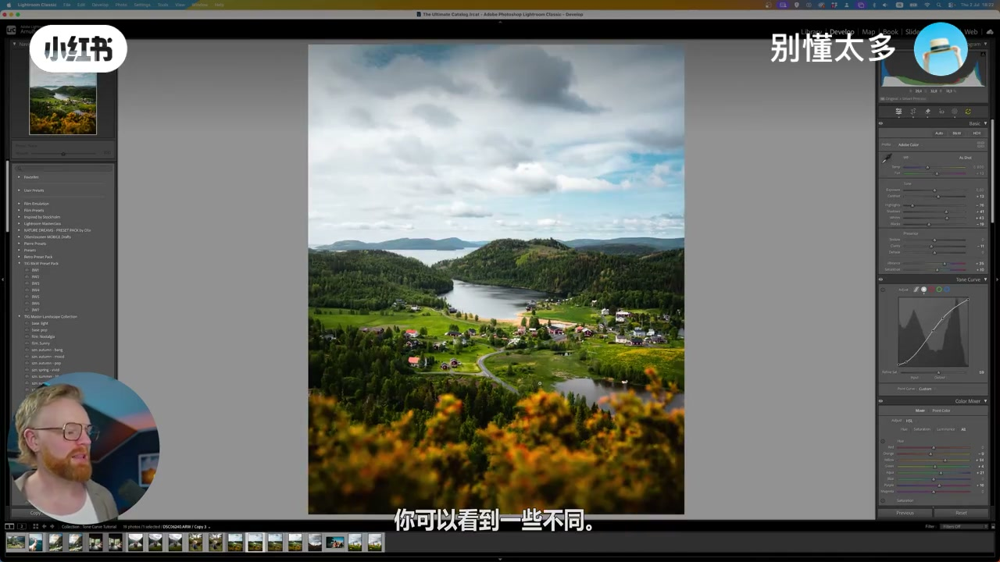
完整转录（653段）
以下文本由 Whisper medium 模型自动转录，可能存在少量识别误差，已尽可能修正。
大家常问我,如何把平淡无奇的RAW文件变成这样漂亮的照片
而秘诀只是在Lightroom里动几个滑块
其实是这样
我这样做后期已经快一年了
而且我也在网上交了成千上万的摄影师很久了
今天呢
朋友
我会把我从头到尾的完整后期工作流展示给你
毫无保留
包括我所有的小技巧
我什么都不藏的
椰子
让我们直接进入Lightroom吧
好的朋友
那么这就是我们今天要处理的照片
嗯
它现在是已经处理好的状态
不过我们可以重置它
然后从零开始重新编辑
所以我编辑照片时喜欢做的第一件事
永远是先进行裁剪
我这样做的原因是先完成裁剪
确定构图
这样我之后就知道该把萌版用在哪些位置了
所以我喜欢先做这一步
现在点击这里的裁剪工具
我们可以选4比3的比例
类似这样
画面有点歪
所以我们点一下自动校正
它会稍微把画面拉直一点
我觉得为了这个教程
大概定在这个位置就可以了
如果你不知道怎么调出这些不同的参考线的话
只需要按一下键盘上的欧键
你就会看到所有这些不同的辅助线来帮助构图
现在这样看起来相当不错了
接下来我通常会做的是到侧边栏子里
选择一个我的预设
有很多预设
我觉得比如这个夏日色彩流行
就是一个很好的起点
然后我会在此基础上继续调整
但是朋友
我今天要给你从头开始演示
另外如果你想获取我的一些预设包
并让你的图像色调保持一致
并极大的加快工作流程
那你可以在下方的描述中找到链接
好了
各位朋友
我们现在要从头开始
为这张照片添加这些调整
那么我现在习惯的做法是
从基础面板的校正开始
有时候你懂的
我会先随便拖动几个划块
看看感觉如何
同时我也经常会参考质方图
有时候我也喜欢先点一下自动按钮
按照他认为正确的方式
比如先校正一下曝光
然后我再基于这个结果继续调整
我觉得具体怎么开始
其实并不重要
我只是像这样稍微调整一下
这一切都关乎感觉
要知道
你必须在修图时保持良好的感觉和状态
这个自动调整的效果还不错
我的意思是
是的
这是个相当不错的起点
之后我们可以来调整一下色调曲线
做个S型
那么为了这次教程
我们就做一个简单的小S曲线
像这样调整
甚至可以在暗部这里做一个轻微的抬身
当黑色看起来不是那么纯粹的时候
经常会这么做
黑色部分
但我觉得目前这是一个相当不错的起点
到目前为止
我们已经完成了裁剪
也做了一些基础校正
而且正如你在后期处理中看到的
很大一部分工作就是来回调整
真正的用你的眼睛去判断什么是好看的
并相信你的直觉和本能
当然
你学习的色彩理论和摄影知识越多
这个过程就会越顺利越轻松
但是归根结底
你觉得什么看起来好看
要知道这是艺术
而艺术是非常主观的
你懂的
不过在这里
我们可以稍微降低一点清晰度
调整幅度很小
这样基础调整就完成了
包括裁剪和一部分色调曲线
接下来的部分
我通常的做法是
要么先进入HSL面板开始调整色彩
把颜色调对色调饱和度和明度
然后也会调整底部的校正面板
但有时候我会先做蒙板
这完全取决于具体的照片和当时的感觉
先做蒙板
然后设定光照
一开始就把主体分离出来
明确它的位置之后再处理色彩
那么为了这个校正
我们就先从色彩开始
然后再进入蒙板部分
但在开始之前
这个东西让我有点介意
我通常不会这么早去除杂物
那是我最后几步才做的事
但这个就是让我忍不住
所以我们先点开污点去除工具
这里用生成式AI功能
像这样涂抹一下就能把它去掉
好了
现在看起来顺眼多了
干净多了
那么关于调色
我们可以从
我们实际上可以先从校准开始
对于这张照片
我想把蓝颜色摄像减30
饱和度加20
再把红颜色摄像加7
嗯
这个改动非常大
我不会保留这么夸张的效果
真的
我们把绿颜色饱和度提到35
实际上还是降到25
我觉得这样就挺不错了
那么校准工具改变的是Lightroom
解读图像底层基调和基础色彩的方式
会对它们进行整体偏移
我觉得在开始调整HSL之前
先做这一步挺好的
我非常喜欢这个效果
这是个相当不错的起点
从这里开始
现在我们来稍微调整一下色调
我感觉黄色部分现在有点太黄了
这张照片是夏天拍的
所以我们可以把黄色再提起来一点点
我们像这样把橙色稍微降一点
蓝色也降一点
你知道吗
这个过程其实挺繁琐的
需要大量来回调整
全靠眼睛来判断
不过我们加快进度
稍后我再跟你解释
我为什么做这些调整
好了
我们来看一下
这就是调整后的效果
这是没动HSL的样子
这是启用HSL之后的样子
现在算是一个相当不错的起点了
之后我可能还会继续调整
做更多改动
现在我想重点强调一下明度划块
如果你关注过一些摄影师
看到他们照片的色彩会想
哇
他们是怎么让颜色这么突出
这么鲜活的
这其实是很多因素
共同作用的结果
当然
包括拍摄时机
光线
蒙版技巧等等
但明度也是你能为色彩增添大量冲击力
这些超级鲜明色彩的地方
比如通过降低蓝色的饱和度
你会得到很舒服的颜色
我个人通常不太喜欢照片里有太多蓝色
但如果我再把蓝色的明度降低
我不是在减少蓝色
其实我是在加深颜色
你能看出来
我觉得这样的组合效果非常好
还有我通常喜欢把黄色提亮
这样能让黄色显得更明亮一些
我们提高了黄色的亮度和明度
相反
对于绿色
我不是提亮
而是喜欢把它降暗
这样就不会让所有颜色都变得亮闪闪
绿色和黄色的色相很接近
我喜欢把它们都调低一点
这样一来
绿色就会显得更浓郁一些
饱满
没错
这样搭配起来就非常舒服
所以这里可以稍微关注一下
明度试着调一调
然后你就能得到非常漂亮的颜色
那么接下来
我们再把整体颜色稍微提亮一点
整体颜色
我觉得这样看起来就挺好了
橙色感觉有点过了
橙色
现在看起来已经相当不错了
还不错
现在在HSL调整之后
我们要进行色彩分级
到这一步
颜色基本上
我是说
已经挺不错的了
顺便提一下
我制作了一个免费的33天邮件课程
每天会发送一个简短的小技巧
帮助你提升修图水平
完全免费
你可以在下方的描述中找到链接
好了
说回调色
这里有阴影
有中间调
还有高光
那么我们要做的是
要么让阴影偏冷一点
要么让阴影偏暖一点
我常常觉得
如果我想要营造一点怀旧的氛围
那种偏暖一点的复古色调
那么
让阴影偏暖会非常有效
但对于这张照片
我觉得让阴影偏冷一点也不错
毕竟我们刚刚
在饱和度里降低了很多蓝色
我想我们可以稍微添加一点点
就一点点蓝色回来
我觉得这样就挺好了
大概像这样
关键在于
你对色彩理论理解的越透彻
你的色彩分析能力就越强
因为你实际上在做的是
你其实只是在阴影部分添加颜色
中间调和高光也是
朋友
如果你能掌握色彩分析
你才能真正达到出
属于自己的独特风格和视觉效果
尽情发挥创意
那么现在我其实想把这里的色调
稍微调冷一点
就一点点
大概减到负5左右
然后对于高光区域
会给它加一点点暖色
没错
我打算把高光调到正41
再微调一下
差不多
这样
现在看这个朋友
已经开始有点样子了
相当不错
而接下来的这一步
可以说是整个后期处理中
至关重要的一步
朋友
这一步你可千万别忽视
那就是狠狠的按下点赞按钮
这个玩笑其实是萌版
好的
这是经过编辑的照片
你可以看到它目前还缺乏层次感
单看这里没问题
颜色也挺不错的
但把这两张图对比一下
这张图的层次感就丰富太多了
为什么会这样呢
因为我在这里用了几个萌版
在这张照片里
萌版用的比较简单
看我总共只用了5个萌版
这是关闭他们的效果
这是开启他们的效果
你就能直观地看到这带来的
令人惊叹的变化
有时候处理一些照片
我会用到大量的萌版
而我使用萌版的目的
就是为了给照片增添重生感
去掌控光线
去塑造它
我想像一位你知道的
像莎士比亚那样去塑造照片
不不是莎士比亚
像是达芬奇
就像一位已故的古典绘画大师
正在创作传世杰作那样
可以看到这是应用萌版之前
这是应用萌版之后
大家可以看到
我刚刚只是画面这部分
显得比较平
画面的层次感一下子就出来了
这一张是如此美丽
而这一张则平淡无奇
把这张拿给你喜欢的人看
说不定能成功
要到联系方式
对吧
当然这可能只是我一厢情愿
但右边这种效果
正是我们要努力实现的
而左边是我们目前的样子
我觉得现在颜色已经好一些了
但再说一次修图的时候
经常需要反复的来回调整
虽然我现在是为了做教程
在即兴演示
但我平时真的会花很多时间
在这上面
所以这里我可能会把橙色
调的再偏红一点
我觉得这个效果挺酷的
看然后或许还会提升高光等参数
但我们接下来要做一些萌版调整
那么第一步
我们可以创建一个镜像渐变
并设置较大的语话值
如果你听懂了语话值这个说法
我这可是会加印象分导
我们把它放在画面中间
那么这张照片的主体是什么呢
我认为它没有一个非常明确的
像我其他一些照片里那样
突出的主体
比如这张
主体明确主体明确主体明确
主体非常明确
而这一张更多是在展示
或者说呈现这片山谷的整体景色
明白吧
我想要做的是将观众的视线引导至
这个小小的海湾
这里用海湾这个词更准确些
所以我会像这样添加一个镜像滤镜
然后我会适当提亮阴影
并稍微增加白色色阶
注意当你提升白色色阶时
很容易让局部高光过曝
所以要随时留意直方图
当你看到这个小三角警示标志亮起时
是在告诉你你的高光部分过曝了
你调过头了
他们太白了
所以你就观察一下
我可以把参数提到多高
它才会开始过曝
然后再微调一下曝光
效果不错
现在雨画
我们可以对它进行雨画处理
雨画值不一定非要设的这么高
我们可以调到类似这样
我觉得这样就挺好
现在我还想做的就是把
比度稍微拉高一点点
好
让这里的画面整体恢复一点冲击力
这效果相当不错
接下来我要做的是
使用一个线性渐变工具
来压按前景
这对增强立体感帮助巨大
我们可以把它稍微降下来一点
有点刚才可能调的有点过了
我可以放大看看
放大到多少合适呢
33%怎么样
对33%
不错
大概像这样
现在我们可以再点一下适合
然后继续调低
而且通常当我压按边角
边缘或前景
有时也包括天空时
经常会结合使用曝光度
还有这里的对比度划块
这样效果也很好
好
我们再压按
那么接下来我们要去塑造光线
光线是从这个方向过来的
对吧
看这里太阳大概在这个位置
你可以看到光线是如何从这一侧照射过来的
你可以看到
那个那边的建筑物阴影是在这一侧
所以我要做的是去强化这个光源的效果
我称这个小技巧为测光模拟
说实在的
一下子也想不到更贴切的词了
但现在看起来是这样的
你只需要创建一个圆形选区
我把它拖到这里
你可以看到这个圆形区域
然后按一下H键
你就能看到它
这样我们就能一直看到这个圆形
接下来我所做的只是降低清晰度
同时降低去朦胧
看到了吗
如果我稍微夸张一点来展示它的实际效果
你可以看到这就是光源的位置
我把它放在和实际光线来源相同的角落
同时你也可以试着调整一下色温
如果你想让它显得更暖
想模拟阳光的感觉
那就可以在这里调整色温
把它向黄色或橙色方向调
这样就能塑造出光源的效果
现在好像有点卡顿
对吧
现在好了
但是我们就这样把它调回来
我们甚至不需要让它偏暖
我们只需要非常轻微的调整一下
像这样一点就好
然后我实际上要再创建一个
这个我会把它做成锥形
创建另一个光源
基本上我现在做的是将两个功能类似的
不同蒙板结合起来
但我会把它们叠加在一起
以获得更强的控制力
我称之为蒙板堆叠
这是个非常简单的概念
看这个蒙板实现的是我刚刚展示的效果
就是这一个
然后这一个的功能很相似
但我现在是把光线打进山谷或者说海湾里
所以现在看起来是这样
可以看到这个效果就是这样
我把光线这样投射下来
你们会看到我经常这么做
好吧
抱歉我的电池没电了
另外你们能看到光线有点变化了
因为太阳出来了
之前我用的只是自然光
我觉得效果还不错
但太阳一出来
光线直射在我邻居的房屋上
就显得那片区域看起来就过曝
太亮了
所以我加了点补光设备
做好布置在这里
好了
我们就像冰岛人常说的接着干吧
继续我们的调整
接下来我要用的是画笔工具
这里与其让照片适配窗口
使用画笔工具时
喜欢把照片稍微缩小一点
试图这样我就能看到所有的边缘
现在我要在这里降低一些清晰度
我只是在边缘涂抹
我们可以按欧键
这样你就能看到我的操作范围
就像这样
还有这里上面也稍微来一点
这里也轻轻刷一下
这么做基本上是为了实现一种效果
当然现在这个数值显然太高了
但我只是稍微收拢一下
压按边角以及最底部的位置
就轻微的调整搞定
我觉得这样就差不多了
现在你可以看到我最终的编辑效果
眼尖的朋友会发现
这和之前有些不同
你看这里
他做了什么
你发现了吗
首先这里的颜色看起来更好了一些
我对他们又做了一些调整
他现在对比度更高了
所以我想指出的问题是
这张照片还缺乏大量对比度
所以我会再提升一下对比度
我可能会进入色调曲线面板
我们会像这样调整一下色调曲线
大概是这样的感觉
但你看出来这里还有什么问题吗
当然了
裁剪
这是一张4比5比例裁剪后的图
现在用3比4的裁剪比例
再看我正在移除这里的这几栋建筑
你看我只是觉得这里所有的建筑
我觉得他们看起来不太好看
所以我就干脆把它们去掉了
具体操作方法是
你只需点击移除工具
虽然你可以启用生成式AI功能
但其实没必要
然后你基本上只需在这里点击
就能移除任何你认为分散注意力的东西
我觉得这边的这艘小船有点碍眼
我觉得连这个小柱子也去掉了
基本上你可以放大画面
然后去想
这个东西看起来好看吗
它有必要存在吗
比如这些房子
他们对画面有什么贡献吗
如果没有
那就移除
我称之为清理照片
我想我已经把这些电线杆清理掉了
我甚至觉得这边我也做了很多清理工作
这还是在生成式AI功能出现之前做的
所以可以说这些都是手动完成的
不过操作上你只需要点击移除
那么在最终导出之前
我认为还有几个关键步骤是我们必须做的
如果我们想将照片编辑水平提升一个层次
真正创作出令自己骄傲的作品的话
是的
如果你喜欢这种关于照片编辑的思维方式
那我强烈推荐你去看我的整个Lightroom大学课
这基本上将我过去一年修图所学的一切
都浓缩成了一套简单
易于跟随循序渐进的教学课程
我的目标不仅仅是教你如何拖动滑块
要让你理解为什么要这么做
以及在处理的当下
做出某些决定的背后原因
已有超过700名摄影师学完了这门课
我们收到的反馈简直好到爆
有一个完整模块是专门为摄影师讲解色彩理论的
这也是目前我能带给各位最棒的后期处理工具
如果你们感兴趣
可以在下方的描述中找到更多信息
好了
还有最后几件我喜欢做的是
这几步非常重要
那就是我需要给照片降噪吗
这一步你可以按任何喜欢的顺序来做
这张照片我挺满意的
我是用ISO100拍摄的
需要降噪
然后我们进行镜头校正
这一步我通常会在所有调整之前做
我刚才把它忘了
但有时我确实喜欢镜头产生的畸变
你知道的那种效果
所以我并不总是启用镜头校正
但这次它校正的挺不错的
然后我再过一遍颜色
再检查一次
我觉得我们可以别动绿色
所以这个改动其实不太好
我们可以把这个稍微调低一点点
这样感觉不错
我们可以加暗角
我们可以加一点点暗角
调整高光
我觉得现在效果都不错
调整一下羽化
然后是颗粒感
然后现在我喜欢做的是
把所有调整再过一遍
只是看看
我们还能做点什么
让它更好一点
我喜欢再提升一下对比度
我觉得绿色有点太绿了
所以我打算把绿色的饱和度
稍微降低一点
就像这样
所以我觉得我们也可以把这里的蓝色
再稍微调低一点
把绿色也降一点
是的
我觉得这很不错了
看看这个
我是说这效果真是太棒了
我可能会再
我觉得我们还可以把这里的
曝光再降低一点点
还有这里的曝光也再降一点点
另外在编辑照片时
最重要的一点就是离开
你的电脑
因为你很容易沉浸在各种调整
决策中而迷失
有时你做出了很糟糕的调整
自己却意识不到
比如说这张照片
你可以看到一些不同
我移走了这里的这根杆子
整体的颜色也更好看了一些
像之前那样有点过于鲜艳了
当然
我还想做一些额外的调整
但如果我一直坐着
可能就发现不了
所以站起来
离开一下再回来
可能只需要五分钟去喝杯水
或者干脆等到第二天
这会让你获得全新的视角
然后你就能发现
好吧
这个蓝色有点太偏太轻了
我们在这里调整它
还有水绿色Aqua
我们也可以调整一下
稍微调一点
关键是第一步
要理解你做的每个调整
会产生什么效果
这是第一步
但是知道为什么某个调整有效
这其实只解决了一半的问题
问题的另一半
我的朋友在于知道如何运用它
而在Lightroom中
有一种我们在这个视频里
稍微涉及到的技巧
它能帮你为照片创造出
惊人的三维立体感与深度
我说的就是那种让人一看就惊呼
哇
这是怎么做到的
如果你想学习如何做到这一点
那么接下来请看这个视频